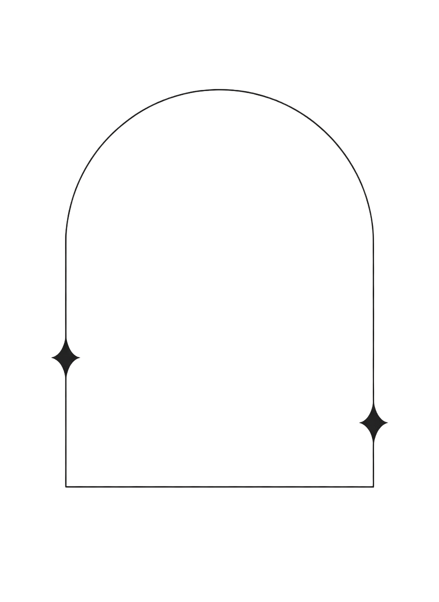
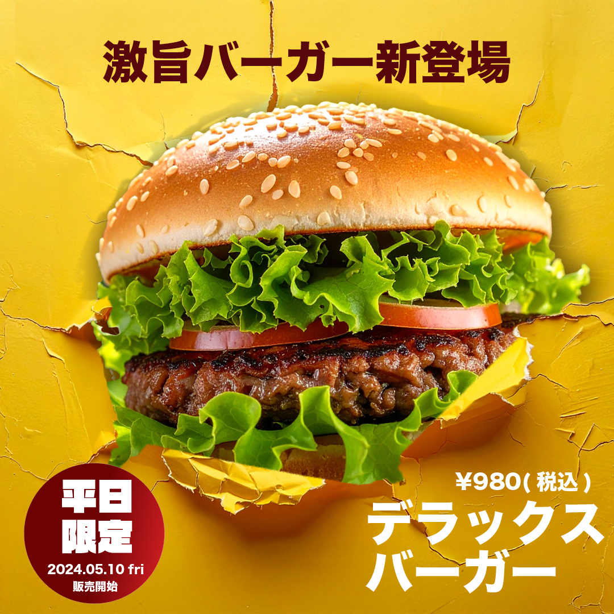
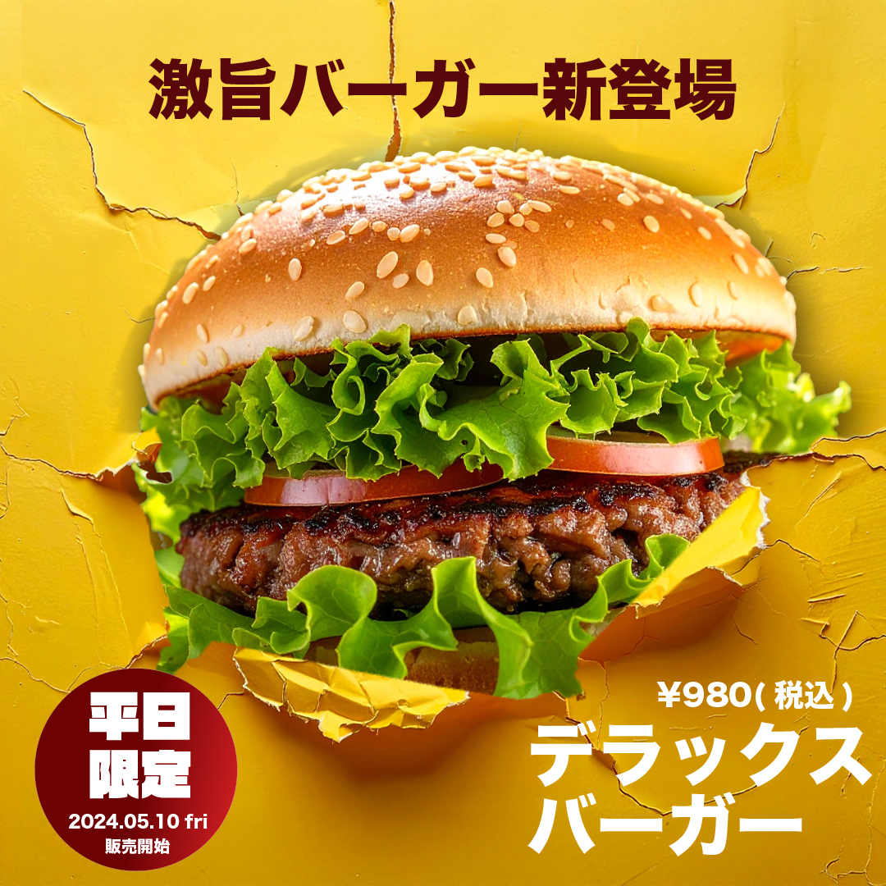
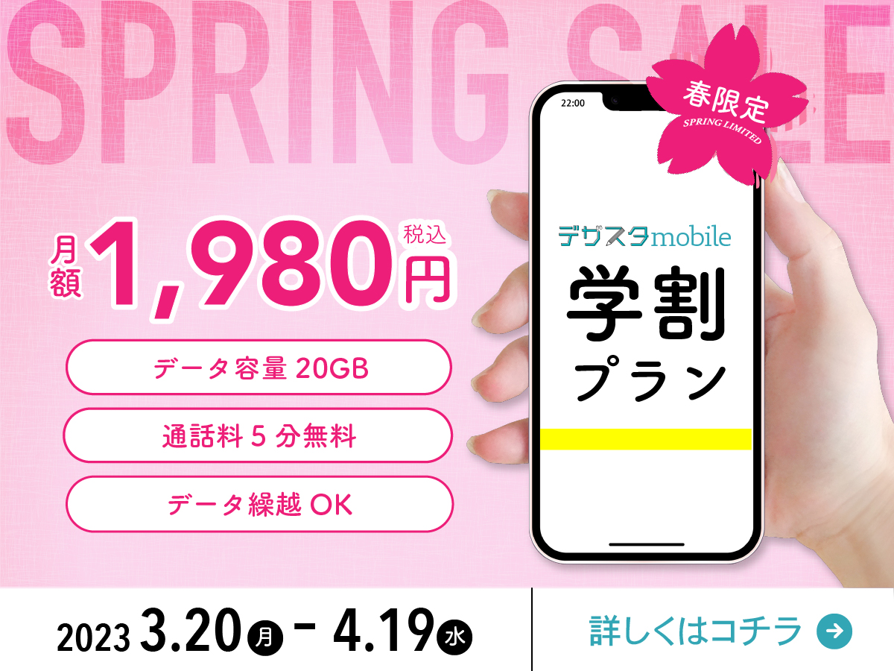
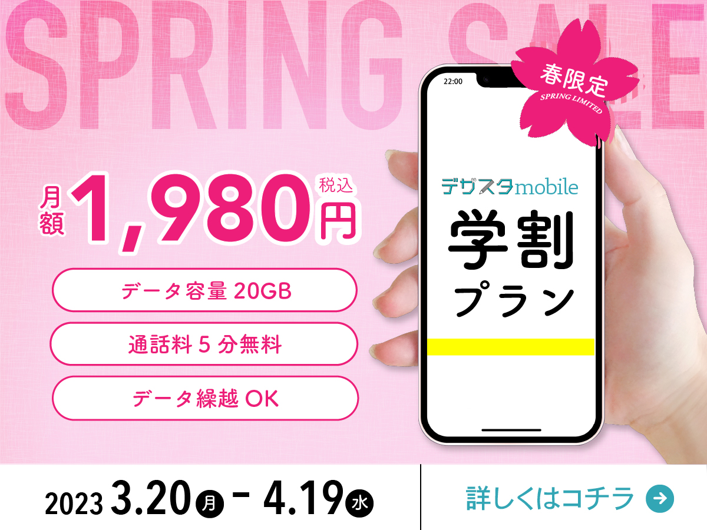

about works contact
scroll



about works contact
scroll
見えないからこそ、そっと心を澄ませて
一緒に水の中で寄り添う
オートクチュールとは、フランス語で「高級仕立て服」という意味で、職人の手作業によって1つ1つ丁寧に作られた一点ものの芸術的な服を指す。
それは単なるファッションではなく、その人のためだけに存在する、繊細で深い美しさ。
自分が作るデザインも、その人のためだけの、優しい光のようなものになることを願って。
そして水の中で泣いている人の涙に気づける人になる。これは私の人として目指し、大切にしていることである。
水の中で泣いている人の涙は見えにくく、気づかれにくい。けれど、見えないからこそ、そっと心を澄ませて、一緒に水の中で寄り添える人でありたい。
このポートフォリオでは、そうした感情の繊細な揺らぎに気づき、寄り添う眼差しを、オートクチュールのような精神で表現しました｡
about
私について


みやざき ほのか
真っ白な冬の日に生まれた魚座のおんなのこ
冬が大好きで、冬にもぎゅっと愛されて生まれてきました。
洋服やメイク、かわいいものが大好きで、
ふっと心に舞い降りる“トキメキ”に自然と心が惹かれてしまう。
私にとってトキメキは、日々をそっと輝かせてくれる小さな魔法です。
works
作 品


 

 


contact
小さな手紙箱